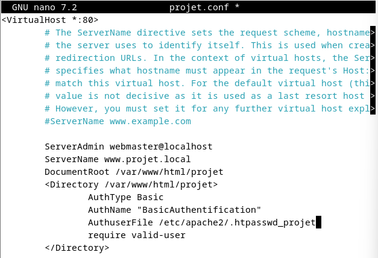
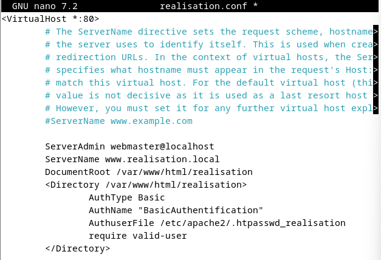
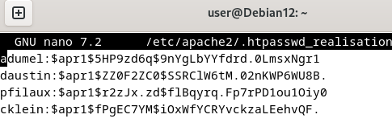
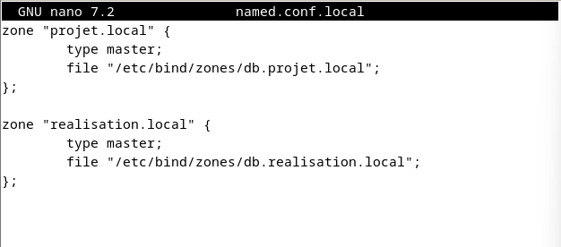
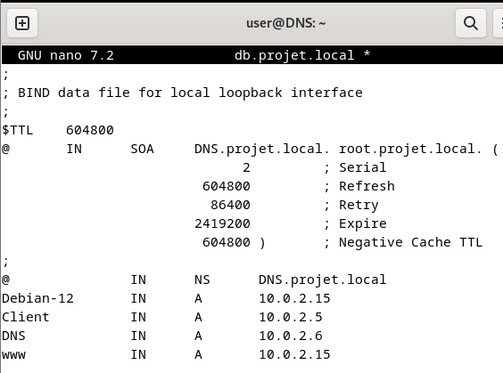
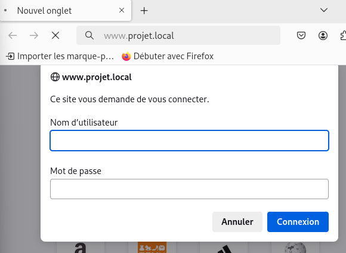
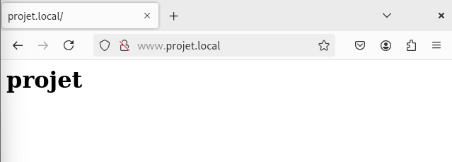
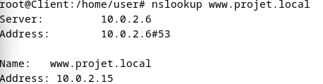

Contexte et demande
La société Axesy veut une plateforme de suivi accessible depuis un navigateur, composée de deux sites : www.projet.local et www.realisation.local.
- Acteurs — le directeur, le chef de projet et deux techniciens.
- Exigences — un seul serveur pour les deux sites ; chaque site accessible par son propre nom.
- Sécurité — authentification par mot de passe ; le site projet est réservé au directeur et au chef de projet.
Choix techniques
- Debian 12 — système libre, gratuit et adapté à l'hébergement web.
- Apache2 et VirtualHosts — deux sites sur un seul serveur.
- Authentification Basic — un fichier
.htpasswdpar site pour attribuer des droits différents. - Bind9 — un serveur DNS pour accéder aux sites par leur nom plutôt que par leur adresse IP.
Réalisation
- Configuration des dépôts, mise à jour et installation d'Apache2.
- Création des dossiers
/var/www/html/projetet/var/www/html/realisationavec leur page d'accueil. - Un fichier de configuration par site, copié depuis
000-default.conf, puis activation aveca2ensite. - Fichiers de mots de passe : le site projet pour le directeur et le chef de projet ; le site réalisation pour l'ensemble de l'équipe.
- Serveur DNS Bind9 : une zone par domaine (
db.projet.local,db.realisation.local), redémarrage et vérification du service. - Configuration du client pour utiliser ce DNS.
Plan de recette
J'ai rédigé un plan de recette de 10 tests, depuis un client Debian 12 avec Firefox :
- 8 tests d'accès : chaque utilisateur sur chaque site, pour vérifier qu'il est accepté ou refusé selon ses droits ;
- 2 tests de résolution de noms avec
nslookup.
Évolutions identifiées
- HTTPS — l'authentification Basic transmet les mots de passe en clair sur HTTP.
- Disponibilité — redondance sur au moins deux serveurs, répartition de charge, RAID avec disque de secours.
- Exploitation — supervision et sauvegardes.
Compétences mobilisées (bloc 1, épreuve E5)
1.3
Mettre en place et vérifier les niveaux d'habilitation associés à un serviceRéserver chaque site aux bons utilisateurs grâce à un fichier de mots de passe par site. Voir l'explication · Voir les preuves
5.1
Réaliser les tests d'intégration et d'acceptation d'un serviceRédiger et dérouler un plan de recette en 10 tests. Voir l'explication · Voir les preuves
5.2
Déployer un serviceDéployer Apache2, les VirtualHosts et le DNS Bind9. Voir l'explication · Voir les preuves
Ces compétences sont reportées dans mon tableau de synthèse E5.
Preuves








Dossier de choix techniqueOuvrir le PDF
Documentation technique d'installation (serveur web et DNS)Ouvrir le PDF
Plan de recette en 10 testsOuvrir le PDF
Environnement de TP : comptes et adresses IP fictifs.